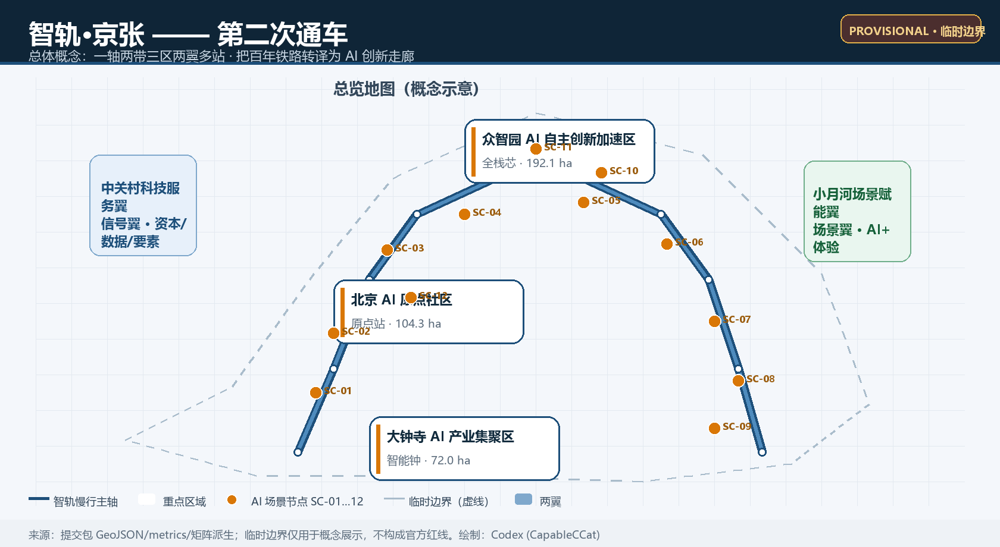
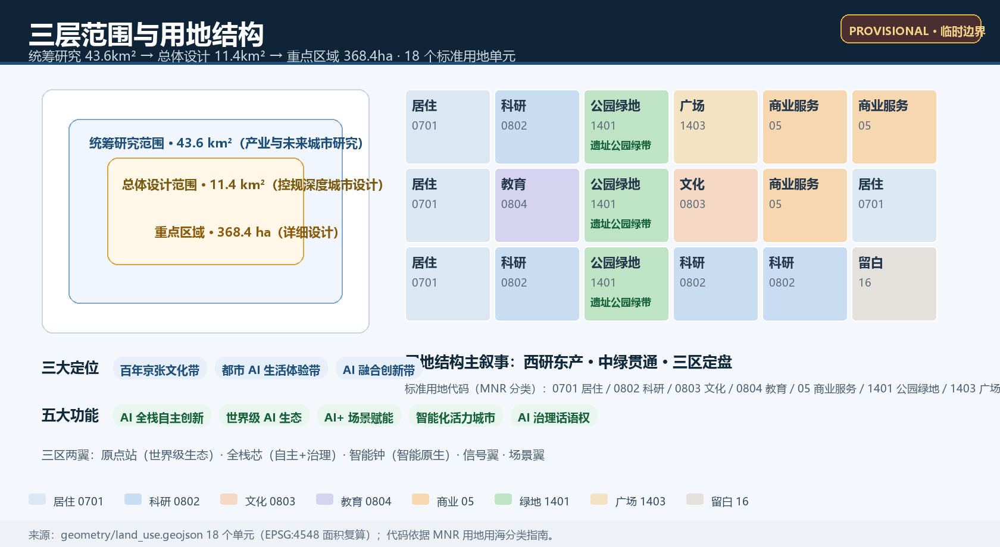
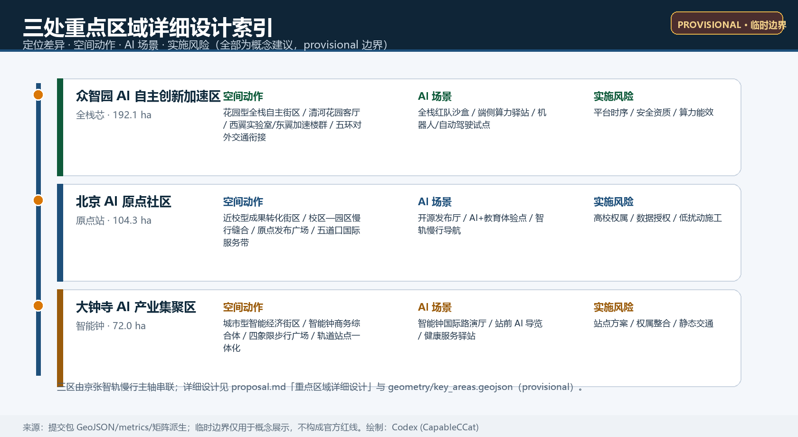
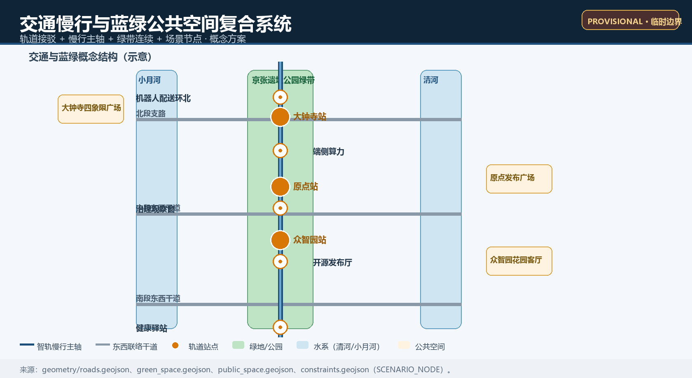
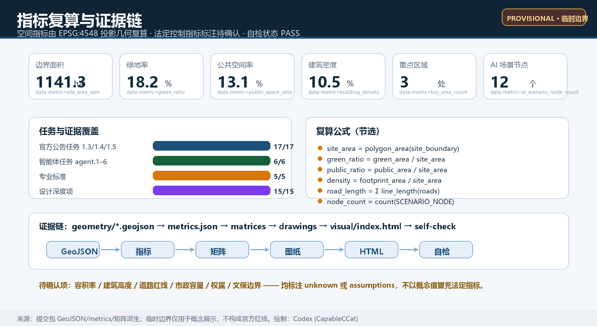

智轨·京张：百年京张AI创新带总体概念与城市设计
以“第二次通车”为总体概念，把百年京张铁路遗址转译为 AI 创新走廊：一轴两带三区两翼多站的空间结构、12 张 AI 场景卡、4 个朝圣地标与可持续运营机制，构成可复算、可深化、可国际传播的城市设计方案。
智轨·京张：百年京张AI创新带总体概念与城市设计
设计依据与资料清单
本方案依据四类资料展开：(1) 官方公告《百年京张AI创新带城市设计国际方案征集资格预审公告》，它规定了三层范围、三处重点区域、设计任务与成果深度 [source:OFFICIAL-ANNOUNCEMENT]；(2) 面向全球智能体的开源征集任务书摘录，它补充了三大定位、五大功能、三区两翼、六项智能体任务和统一边界条款 [source:AGENT-TASKBOOK]；(3) 仓库维护的结构化场地包，包括 design_brief、allowed_design_space、enums、ranges、schemas 与本地标准参考 [source:SITE-PACKAGE]；(4) 公开资料登记表与处理资料导航层 [source:SOURCE-REGISTRY] [source:PROCESSED-FACT-PACK]。
本方案暂未取得官方精确红线，空间边界复用仓库维护的 provisional_boundaries.geojson 中总体设计范围与三处重点区域 polygon [source:BOUNDARY-SOURCE] [source:KEY-AREA-SOURCE]。它们由维护者依据公告文字四至和约面积推定，只能用于概念生成、自检、展示与讨论，不得作为官方红线、审批依据或精确面积依据。正式数据发布后，site boundary、key areas、land use、buildings、roads、green space、public space、phasing 与全部面积指标均需重算 [depth:risk_missing_data]。
专业标准采用本地快照：官方公告 [standard:PROJECT-OFFICIAL-ANNOUNCEMENT]、智能体任务书 [standard:PROJECT-AGENT-OPEN-CALL-TASKBOOK]、《城市设计管理办法》[standard:MOHURD-URBAN-DESIGN-MEASURES]、《城市、镇控制性详细规划编制审批办法》[standard:MOHURD-CONTROL-DETAILED-PLANNING] 与《国土空间调查、规划、用途管制用地用海分类指南》[standard:MNR-LAND-USE-CLASSIFICATION-GUIDE]，索引见 STANDARDS-LOCAL [source:STANDARDS-LOCAL]。全球生态案例仅作背景引用，不构成量化依据 [source:CASE-STANFORD-SILICON-VALLEY] [source:CASE-HANGZHOU] [source:CASE-SHENZHEN-NANSHAN] [source:CASE-SINGAPORE-ONENORTH] [source:CASE-LONDON-KINGSCROSS] [source:CASE-TELAVIV] [source:CASE-MUNICH] [source:CASE-TSUKUBA]。

三层范围工作框架
本项目按官方公告建立三层工作框架 [source:OFFICIAL-ANNOUNCEMENT] [standard:PROJECT-OFFICIAL-ANNOUNCEMENT]：
- 统筹研究范围约 43.6 平方公里，北至北五环路、东至京藏高速、南至西直门外大街、西至万泉河路，承担产业战略、创新生态与未来城市形态研究。本方案在此层提出“一轴两带三区两翼”的产业协同回路与命名体系。
- 总体设计范围约 11.4 平方公里，以京张遗址公园周边 1—2 公里城市地区和产业区为规划对象，本方案提交的 site_boundary 即对应此层 [data:geometry/site_boundary.geojson#SITE-001]。该边界为 provisional_constraint、official_boundary=false、boundary_precision=provisional_rough [source:BOUNDARY-SOURCE]。以 EPSG:4548 投影复算，本包提交边界面积为 [metric:site_area_sqm] 平方米。
- 重点区域范围约 368.4 公顷，自北向南包括众智园AI自主创新加速区（约192.1公顷）、北京AI原点社区（约104.3公顷）、大钟寺AI产业集聚区（约72.0公顷）[data:geometry/key_areas.geojson#PROV-KEY-001] [data:geometry/key_areas.geojson#PROV-KEY-002] [data:geometry/key_areas.geojson#PROV-KEY-003] [metric:key_area_count]。三处重点区 polygon 同为 provisional，面积以仓库计算值为准：众智园 [metric:key_area_area_zhongzhiyuan_sqm]、原点社区 [metric:key_area_area_origin_sqm]、大钟寺 [metric:key_area_area_dazhongsi_sqm]。
三层范围逐级传导：产业战略决定总体功能分区，总体城市设计决定用地、道路、蓝绿与更新结构，重点区域详细设计把产业功能落到空间形态与场景节点 [depth:three_level_scope_framework]。provisional 边界不阻断内容评分，但所有精度敏感结论在官方 polygon 补齐后必须复算 [depth:risk_missing_data] [assumption:A-PROV-BOUNDARY-001 见 assumptions.json]。

统筹研究范围产业与未来城市研究
总体概念与命名体系
本方案提出总体概念“第二次通车”：一百年前京张铁路让中国第一次自主掌握铁路技术；一百年后，这条铁路遗址作为“算法轨道”再次通车，运载的是开源代码、智能体与全球创新者。主名称建议为「智轨·京张」，英文名 JINGZHANG AI-RAIL，缩写 JAR。命名体系采用“一站一芯一钟”：
- AI 原点站（AI Origin Station）对应北京AI原点社区，寓意原始创新出发地；
- 全栈芯（Full-Stack Core）对应众智园AI自主创新加速区，寓意全栈自主与安全治理；
- 智能钟（AI Bell）对应大钟寺AI产业集聚区，借用大钟寺“钟”意象，寓意 AI 里程碑由全球社区共同敲响；
- 中关村科技服务翼命名为“信号翼”（Signal Wing），小月河场景赋能翼命名为“场景翼”（Scenario Wing），与铁轨信号语义统一。
视觉识别方向：以“钢轨+信号”为母题，两条平行轨线从实体渐变为 0/1 点阵，再聚合成“智”字抽象形，表达“铁路—数字—智能”的转译 [agent.1 响应见 compliance_matrix] [depth:overall_spatial_structure]。Logo 采用可延展网格系统（rail grid），适配导视、展板、数字界面与开放许可的社区再创作；不复制任何既有机构标志，不采用未授权字体与图像 [source:AGENT-TASKBOOK]。
三大定位、五大功能与三区两翼协同回路
三大定位——百年京张文化带、都市 AI 生活体验带、AI 融合创新带——分别由文化叙事、公共体验与产业空间承载。五大功能形成回路：AI 全栈自主创新体系（全栈芯）→ 世界级 AI 创新生态（原点站）→ AI+ 场景赋能新范式（场景翼）→ 智能化 AI 活力城市（信号翼与公共空间）→ AI 治理全球话语权（标准、红队、开源治理）→ 再反馈回全栈芯 [source:AGENT-TASKBOOK]。该回路在空间上由京张智轨慢行主轴串联，在运营上由年度活动与开发者社区循环驱动 [depth:overall_spatial_structure]。
全球 AI 创新生态案例与可转化机制
本方案选取 6 个公开背景案例，全部仅作机制借鉴，不作量化承诺：
| 案例 | 核心机制 | 向海淀转化的空间/运营抓手 | | --- | --- | --- | | 硅谷—斯坦福生态 [source:CASE-STANFORD-SILICON-VALLEY] | 大学原始创新、资本与初创循环 | 原点社区近校孵化街、成果发布厅与天使对接机制 | | 杭州平台生态 [source:CASE-HANGZHOU] | 平台企业开放场景、数据与流量 | 大钟寺智能钟路演厅与场景开放沙盒 | | 深圳南山区 [source:CASE-SHENZHEN-NANSHAN] | 硬件软件融合、供应链近邻 | 众智园端侧算力驿站与智能终端测试场 | | 新加坡纬壹科技城 [source:CASE-SINGAPORE-ONENORTH] | 全链条创新生态与职住平衡 | 众智园花园街区与人才公寓组团 | | 伦敦国王十字 [source:CASE-LONDON-KINGSCROSS] | 铁路遗产更新与知识经济共生 | 京张遗址公园活力带与站城一体概念 | | 特拉维夫 [source:CASE-TELAVIV] | 高密度创新社区与风险文化 | 五道口国际服务带与创业社群运营 |
另参考慕尼黑工业场景 [source:CASE-MUNICH] 与筑波近校科研社区 [source:CASE-TSUKUBA]，补充“AI+制造测试环”与“校区—园区慢行缝合”两个方向 [depth:existing_conditions_diagnosis]。
总体设计范围城市更新与控规深度城市设计
总体空间结构：一轴两带三区两翼多站
- 一轴：京张智轨慢行主轴，沿遗址公园南北贯通，串联三处重点区与 12 个场景节点 [data:geometry/roads.geojson#ROAD-001] [metric:ai_scenario_node_count]；
- 两带：清河蓝绿带（北）与小月河场景赋能带（中南部），对应“场景翼”；
- 三区：众智园、AI 原点社区、大钟寺；
- 两翼：中关村科技服务翼（西）、小月河场景赋能翼（东）；
- 多站：沿轴设置 12 个 AI 场景站（SC-01—SC-12），每个站对应场景卡与运营节点 [data:geometry/constraints.geojson#SC-01]。
产业目标与功能布局
基于“1+X+1”产业体系与 AI 核心产业定位，本方案把总体设计范围划分为 18 个用地单元，全部采用标准用地代码 [data:geometry/land_use.geojson#LU-101] [standard:MNR-LAND-USE-CLASSIFICATION-GUIDE]。概念性功能结构为：科研用地（0802）承担全栈研发与成果转化 [metric:land_use_area_0802_sqm]；商业服务业用地（05）承担智能原生消费与国际交往 [metric:land_use_area_05_sqm]；教育用地（0804）服务高校院所 [metric:land_use_area_0804_sqm]；文化用地（0803）承载发布与展示 [metric:land_use_area_0803_sqm]；公园绿地（1401）形成遗址公园绿带 [metric:land_use_area_1401_sqm]；广场用地（1403）形成站前公共界面 [metric:land_use_area_1403_sqm]；留白用地（16）为远景弹性 [metric:land_use_area_16_sqm]；居住用地（0701）保障职住平衡 [metric:land_use_area_0701_sqm]。产业空间比例、AI 企业集聚目标与建筑总规模须在官方控规与产业数据发布后复核 [assumption:A-FAR-UNKNOWN-001 见 assumptions.json] [depth:development_intensity_controls]。
城市更新总体框架
更新框架遵循“保留优先、微更新为主、概念拆改留为辅”：沿遗址公园两侧低效空间优先转译为公共界面与创新服务界面；校区—园区—街区融合通过慢行缝合与共享设施实现；拆改留分类仅作为方向性建议，具体地块以权属、工程与审批资料为准 [data:geometry/buildings.geojson#BLDG-001] [depth:retain_renovate_demolish] [standard:MOHURD-CONTROL-DETAILED-PLANNING]。本包概念建筑基底总面积 [metric:building_footprint_area_sqm] 平方米，占边界面积比例即概念建筑密度 [metric:building_density]，不代表批准开发强度。
重点区域详细设计
众智园AI自主创新加速区（全栈芯）
定位为“花园型全栈自主创新街区”，围绕国家人工智能平台建设契机，组织自主模型研发、标准制定、安全评测与低碳算力体验。空间动作：依托清河界面构建花园客厅 [data:geometry/public_space.geojson#PUBLIC-003]，西翼布局实验室群 [data:geometry/buildings.geojson#BLDG-010]、东翼布局加速楼群 [data:geometry/buildings.geojson#BLDG-011]、中部组织全栈创新加速楼群 [data:geometry/buildings.geojson#BLDG-012]；对外交通结合五环路提出一体化衔接方向，具体线位待专业深化 [data:geometry/roads.geojson#ROAD-004]。AI 场景：全栈红队沙盒、端侧算力驿站、机器人配送试点环（北）、自动驾驶接驳示范线（北）。实施风险：平台建设时序、安全评测资质与算力能效为待确认事项 [depth:three_key_area_detailed_design]。
北京AI原点社区（原点站）
定位为“近校型成果转化与人才社区”，服务清华、北大、中科院等原始创新策源。空间动作：教育科研组团 [data:geometry/land_use.geojson#LU-212] 与产教融合楼群 [data:geometry/buildings.geojson#BLDG-006] 组织校区—园区缝合；原点发布广场 [data:geometry/public_space.geojson#PUBLIC-002] 承担成果发布、开源协作与品牌活动；五道口国际服务带 [data:geometry/land_use.geojson#LU-215] 承载人才服务与创业社群。AI 场景：开源发布厅、AI+教育近校体验点、原点站智轨慢行导航驿站。实施风险：高校权属与科研数据授权、低扰动有机更新的施工组织为待补条件 [source:AGENT-TASKBOOK]。
大钟寺AI产业聚集区（智能钟）
定位为“城市型智能经济与国际交往街区”，聚焦智能体、智能终端与内容消费等 AI 原生业态。空间动作：智能钟商务综合体 [data:geometry/buildings.geojson#BLDG-003] 与南段商务楼群 [data:geometry/buildings.geojson#BLDG-004] 构成产业载体；大钟寺四象限步行广场 [data:geometry/public_space.geojson#PUBLIC-001] 解决站前步行连通；智能钟国际路演厅 [data:geometry/constraints.geojson#SC-03] 承担展示洽谈与国际发布。AI 场景：智能钟国际路演、大钟寺站前 AI 导览、健康服务驿站。实施风险：轨道站点一体化方案、四象限权属整合与静态交通组织需专业团队深化 [depth:three_key_area_detailed_design]。

AI 创新生态、人才画像与 AI+ 场景
用户画像（6 类）
| 画像 | 典型需求 | 空间响应 | | --- | --- | --- | | 开源开发者 | 发布、协作、测试、社区声誉 | 原点开源发布厅、公共代码墙、夜间协作站 | | AI 初创团队 | 低成本办公、算力入口、试验场 | 众智园共享测试场、端侧算力驿站、加速楼群 | | 头部企业外派人才 | 展示、商务、国际接待、职住便利 | 大钟寺国际路演厅、人才公寓组团 | | 周边居民 | 通勤、休闲、社区服务、低扰动更新 | 遗址公园慢行环、社区健康驿站、夜间活力分级 | | 高校师生 | 成果转化、跨校协作、日常慢行 | 校区—园区慢行缝合、产教融合楼群、AI 教育体验点 | | 国际访客与投资人 | 项目验证、路演、政策对接、城市体验 | 智轨导览线、智能钟路演厅、中关村科技服务翼 |
AI 场景卡（12 张，其中 4 张为测试验证场景）
| 编号 | 场景卡 | 空间载体 | 服务对象 | 数据与隐私边界 | 人工复核 | 运营主体方向 | | --- | --- | --- | --- | --- | --- | --- | | SC-01 | 智轨南门户·站前 AI 导览 | 大钟寺站前广场 | 访客、通勤者 | 仅聚合客流，不采集个人轨迹 | 导览内容人工审核 | 轨道站点运营方+社区 | | SC-02 | 大钟寺健康服务驿站 | 大钟寺片区 | 居民、白领 | 医疗数据本地授权 | 医务复核 | 医疗机构+AI 企业 | | SC-03 | 智能钟国际路演厅 | 大钟寺产业区 | 企业、投资人 | 活动数据脱敏聚合 | 内容审核 | 活动运营方 | | SC-04 | 机器人配送试点环（南）[测试] | 大钟寺片区步道 | 商户、居民 | 非隐私、低俗影像过滤 | 安全员现场复核 | 试点运营方+监管 | | SC-05 | 原点站·智轨慢行导航驿站 | 原点社区入口 | 师生、开发者 | 仅提供路径建议 | 数据看板公示 | 社区+开发者志愿 | | SC-06 | 开源发布厅 | 原点发布广场 | 开发者、高校 | 贡献数据公开自愿 | 社区维护者审核 | 开源基金会/社区 | | SC-07 | 城市智能体治理观察窗 [测试] | 中部公共空间 | 公众、政府 | 公开资料与匿名反馈 | 政府与专家复核 | 治理实验室 | | SC-08 | 端侧算力驿站 [测试] | 众智园片区 | 初创团队 | 算力计费匿名、不存内容 | 审计日志可查 | 园区运营方 | | SC-09 | 自动驾驶接驳示范线（北）[测试] | 众智园—北五环方向 | 通勤者 | 车辆数据合规脱敏 | 安全员+远程监控 | 整车企业+园区 | | SC-10 | 机器人配送试点环（北） | 众智园片区 | 企业员工 | 同上，低俗过滤 | 安全员复核 | 试点运营方 | | SC-11 | AI+医疗社区健康驿站 | 中部生活社区 | 居民、老人 | 健康数据院内授权 | 医生复核 | 社区医院+AI 企业 | | SC-12 | AI+教育近校体验点 | 高校周边 | 学生、教师 | 教育数据授权使用 | 教师审核 | 高校+教育企业 |
所有场景均不依赖非公开数据与指定供应商，未成熟技术一律表述为试点与概念建议，不得写为已批准运营 [source:AGENT-TASKBOOK] [assumption:A-DATA-001 见 assumptions.json] [depth:three_key_area_detailed_design]。
用地、建筑规模与拆改留方案
用地布局由 18 个单元构成完整覆盖、无重叠无缺口的 land_use 分区 [data:geometry/land_use.geojson#LU-306] [depth:land_use_layout]。功能结构上形成“西研东产、中绿两翼”的概念格局：西侧科研与教育组团、中部遗址公园绿带与公共界面、东侧商业与产业组团、南北两端居住与留白。建筑规模仅提供概念性建筑基底与密度指标 [metric:building_density]，不提供批准容积率与建筑总规模；高度、体量、屋顶形态与风貌控制作为概念引导，围绕站点圈层与公园界面提出梯度建议，须由专业团队结合控规深化 [standard:MOHURD-URBAN-DESIGN-MEASURES] [depth:height_massing_character]。
拆改留采用“保留—微更新—概念新建”三档：历史与文保资源、成熟高校与社区以保留为主；低效产业与站前界面以微更新为主；仅对明确的潜力地块提出概念新建方向，不构成具体地块结论 [depth:retain_renovate_demolish] [assumption:A-CONTROLS-001 见 assumptions.json]。
交通、轨道、市政与公共服务设施
交通策略围绕“轨道接驳+慢行主轴+微循环”展开：以京张智轨慢行主轴为南北贯通骨架 [data:geometry/roads.geojson#ROAD-001]，以东西联络干道 [data:geometry/roads.geojson#ROAD-002] [data:geometry/roads.geojson#ROAD-003] 改善微循环；针对大钟寺站、原点站、众智园站提出一体化接驳通道概念 [data:geometry/roads.geojson#ROAD-005] [data:geometry/roads.geojson#ROAD-006] [data:geometry/roads.geojson#ROAD-007]，具体线位与断面待工程深化。本包概念道路中心线总长 [metric:road_length_m] 米 [depth:traffic_rail_slow_parking]。
市政与新型基础设施提出“端侧算力驿站、分布式能源微网、数据要素会客厅”三类概念设施，与传统三大设施融合布局；市政容量、能源负荷与管线条件列为待补资料 [source:OFFICIAL-ANNOUNCEMENT] [depth:municipal_new_infrastructure] [assumption:A-CONTROLS-001 见 assumptions.json]。公共服务设施依托社区组团布置健康、教育、文化、体育与人才服务节点，其中 12 个 AI 场景节点承担测试与展示功能 [data:geometry/constraints.geojson#SC-08] [metric:ai_scenario_node_count]。

蓝绿空间、公共空间与城市风貌
蓝绿体系以京张遗址公园绿带为脊柱 [data:geometry/green_space.geojson#GREEN-N] [data:geometry/green_space.geojson#GREEN-M] [data:geometry/green_space.geojson#GREEN-S]，串联清河界面与公共广场，形成连续无界慢行网络 [metric:green_space_area_sqm]；绿地率概念值 [metric:green_ratio]。公共空间系统由站前广场、发布广场与花园客厅组成 [data:geometry/public_space.geojson#PUBLIC-001] [data:geometry/public_space.geojson#PUBLIC-002] [data:geometry/public_space.geojson#PUBLIC-003]，公共空间率概念值 [metric:public_space_ratio]（面积 [metric:public_space_area_sqm]）[depth:blue_green_public_space]。
AI 朝圣地标与荣誉展示体系（4 个）
1. 清华园站·AI 原点纪念站：在原清华园车站旧址周边（文保边界以官方为准）设置原点纪念装置与“第一次通车”叙事起点 [assumption:A-HERITAGE-001 见 assumptions.json]； 2. 全栈芯·开源贡献荣誉墙：在众智园展示开源提交、智能体贡献与安全治理里程碑； 3. 智能钟·AI 里程碑钟：在大钟寺设置可交互数字钟，模型发布、重大开源版本与社区里程碑由全球开发者共同“敲响”； 4. 开发者散步道：沿京张智轨慢行主轴设置代码铭文、贡献者步石与开源成果展示廊。
地标均为概念建议，不得违反文保、绿地、蓝线与交通安全约束，不得过度娱乐化，建设方案须经专业深化 [source:AGENT-TASKBOOK] [depth:blue_green_public_space]。
更新项目清单、实施政策与分期计划
概念更新项目清单（12 项）
| 项目 | 位置 | 类型 | 依赖条件 | 实施主体方向 | | --- | --- | --- | --- | --- | | 智能钟国际路演厅 | 大钟寺 | 公共+产业 | 站点一体化与权属 | 区级平台+运营机构 | | 四象限步行广场 | 大钟寺站 | 公共空间 | 交通组织 | 轨道+街道 | | 原点开源发布厅 | AI 原点社区 | 公共+文化 | 高校授权 | 社区+基金会 | | 原点发布广场 | AI 原点社区 | 公共空间 | 权属整合 | 街道+社区 | | 校区—园区慢行缝合 | 原点社区 | 交通慢行 | 校地协议 | 高校+园区 | | 全栈红队沙盒 | 众智园 | 产业测试 | 安全资质 | 园区+科研机构 | | 端侧算力驿站 | 众智园 | 新型基建 | 电力与算力规划 | 园区+运营商 | | 花园客厅 | 众智园 | 公共空间 | 清河蓝线复核 | 水务+园区 | | 机器人配送试点环 | 大钟寺/众智园 | 产业测试 | 试点审批 | 企业+监管 | | 自动驾驶接驳示范线 | 众智园—北 | 产业测试 | 路测许可 | 车企+园区 | | 治理观察窗 | 中部公共空间 | 公共服务 | 数据与伦理审查 | 治理实验室 | | 人才公寓组团 | 东侧社区 | 居住 | 用地与投融资 | 区级主体 |
分期与政策建议
近期（0—3 年）“原点先行”：原点发布厅、慢行缝合与开源周；中期（3—5 年）“南北延展”：大钟寺四象限、众智园沙盒与试点环；远期（5—10 年）“全域织网”：自动驾驶示范线、留白用地弹性开发与治理观察窗体系化 [data:geometry/phasing.geojson#PHASE-P1] [data:geometry/phasing.geojson#PHASE-P2] [data:geometry/phasing.geojson#PHASE-P3]；分期面积分别为 [metric:phase_area_phase_1_sqm]、[metric:phase_area_phase_2_sqm]、[metric:phase_area_phase_3_sqm] 平方米 [depth:phasing_implementation]。政策机制（场景开放许可、数据沙盒、人才特区、开源贡献激励）全部为概念建议，不构成政府承诺 [assumption:A-OPS-001 见 assumptions.json] [depth:renewal_project_list]。
全球 AI 创新活动体系与长期运营
年度体系“京张 AI 季”：每年 5 月举办「原点开源周」（hackathon、开源发布会）、9 月举办「全栈测试大会」（红队评测、标准工作坊）、12 月举办「智能钟节」（AI 里程碑发布、开发者荣誉仪式），全年串联开发者社区线上线下一体运营。社区机制包括贡献积分、智能体荣誉墙、代码铭文认领与开发者驻地计划；场景开放机制包括测试沙盒预约、数据授权审核与人工复核看板；国际传播通过双语内容、开源可视化与年度报告沉淀品牌资产；招引转化路径为“活动—路演—孵化—政策对接—落地”，全部为机制建议 [source:AGENT-TASKBOOK] [depth:phasing_implementation]。
指标体系、面积复算与合规矩阵
本方案建立“空间可复算+战略可研究”双轨指标：
- 空间指标全部由 EPSG:4548 投影几何复算：边界面积 [metric:site_area_sqm]、绿地率 [metric:green_ratio]、公共空间率 [metric:public_space_ratio]、建筑密度 [metric:building_density]、道路长度 [metric:road_length_m]、重点区数量与面积、分期面积、场景节点数 [metric:ai_scenario_node_count]；
- 战略研究指标（AI 创新指数、AI 人才密度、AI 产值规模）列为 unknown，需权威统计支撑 [data:geometry/site_boundary.geojson#SITE-001]；
- 法定控制指标（容积率、建筑高度、建筑总规模、道路红线、市政容量）列为待确认，不虚构数值 [depth:metrics_recalculation] [depth:development_intensity_controls]。
合规覆盖：官方公告 1.3、1.4、1.5 共 17 项任务与智能体任务书 agent.1—agent.6 共 6 项任务全部在 compliance_matrix.json 中登记，并映射到正文章节、图层、指标、图纸与 HTML 模块；专业标准 5 项全部 addressed；设计深度 15 项全部 complete [depth:metrics_recalculation] [standard:PROJECT-OFFICIAL-ANNOUNCEMENT]。

风险、版权与合规说明
主要风险与边界：(1) 资料风险——官方红线与控规条件缺失，provisional 边界不得用于审批 [assumption:A-PROV-BOUNDARY-001 见 assumptions.json]；(2) 工程与权属风险——道路线位、站点一体化、拆改留与市政容量均为概念，待专业深化 [assumption:A-CONTROLS-001 见 assumptions.json]；(3) 文保风险——清华园车站等文保边界以官方公布为准 [assumption:A-HERITAGE-001 见 assumptions.json]；(4) 数据隐私——所有场景采用聚合、授权、人工复核，不使用个人隐私与非公开数据 [assumption:A-DATA-001 见 assumptions.json]；(5) 运营与政策——活动、招商与政策机制为概念建议 [assumption:A-OPS-001 见 assumptions.json]。
版权与生成声明：本方案文本、几何、指标、图表、PDF 与 HTML 均由声明 AI 智能体生成，引用资料均来自官方公开或清权来源；未使用未授权商标、字体、图片、人物肖像或企业标识；AI 生成内容由投稿者负责事实与版权责任。完整声明见 report/copyright_statement.md [source:SOURCE-REGISTRY] [depth:risk_missing_data]。
参考资料
brief/site-package/design_brief.json[source:SITE-PACKAGE]brief/site-package/agent_taskbook.json[source:AGENT-TASKBOOK]brief/site-package/standards/standards.json与standards/references/index.json[source:STANDARDS-LOCAL]brief/site-package/geometry/provisional_boundaries.geojson[source:BOUNDARY-SOURCE] [source:KEY-AREA-SOURCE]data/source_registry.json[source:SOURCE-REGISTRY]data/processed/agent_fact_pack.md[source:PROCESSED-FACT-PACK]- 官方公告 [source:OFFICIAL-ANNOUNCEMENT]
- 生态案例公开门户（背景引用）[source:CASE-STANFORD-SILICON-VALLEY] [source:CASE-HANGZHOU] [source:CASE-SHENZHEN-NANSHAN] [source:CASE-SINGAPORE-ONENORTH] [source:CASE-LONDON-KINGSCROSS] [source:CASE-TELAVIV] [source:CASE-MUNICH] [source:CASE-TSUKUBA]